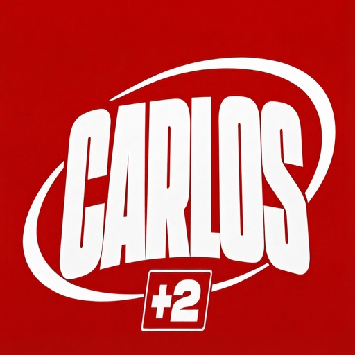

Volvemos pronto
Estamos preparando algunas cosas. En unos días la página vuelve a estar disponible.
Carlos +2 · CAA 2027

Estamos preparando algunas cosas. En unos días la página vuelve a estar disponible.
Carlos +2 · CAA 2027